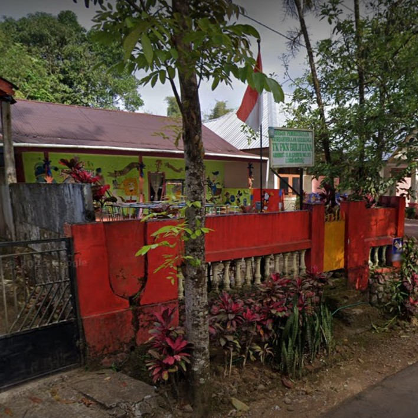
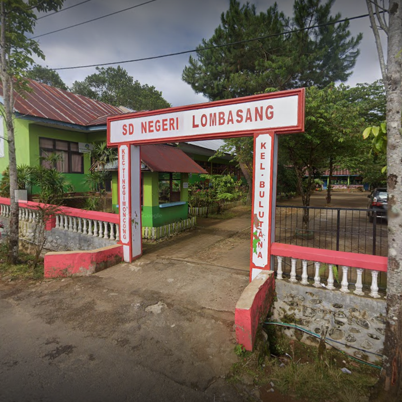
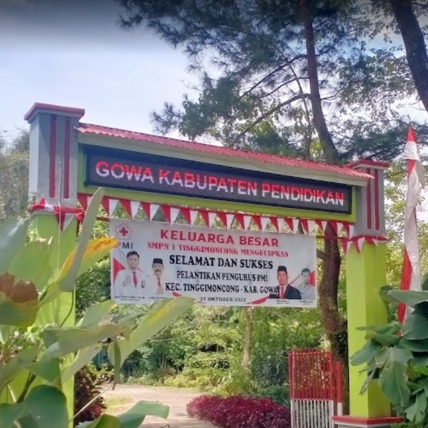
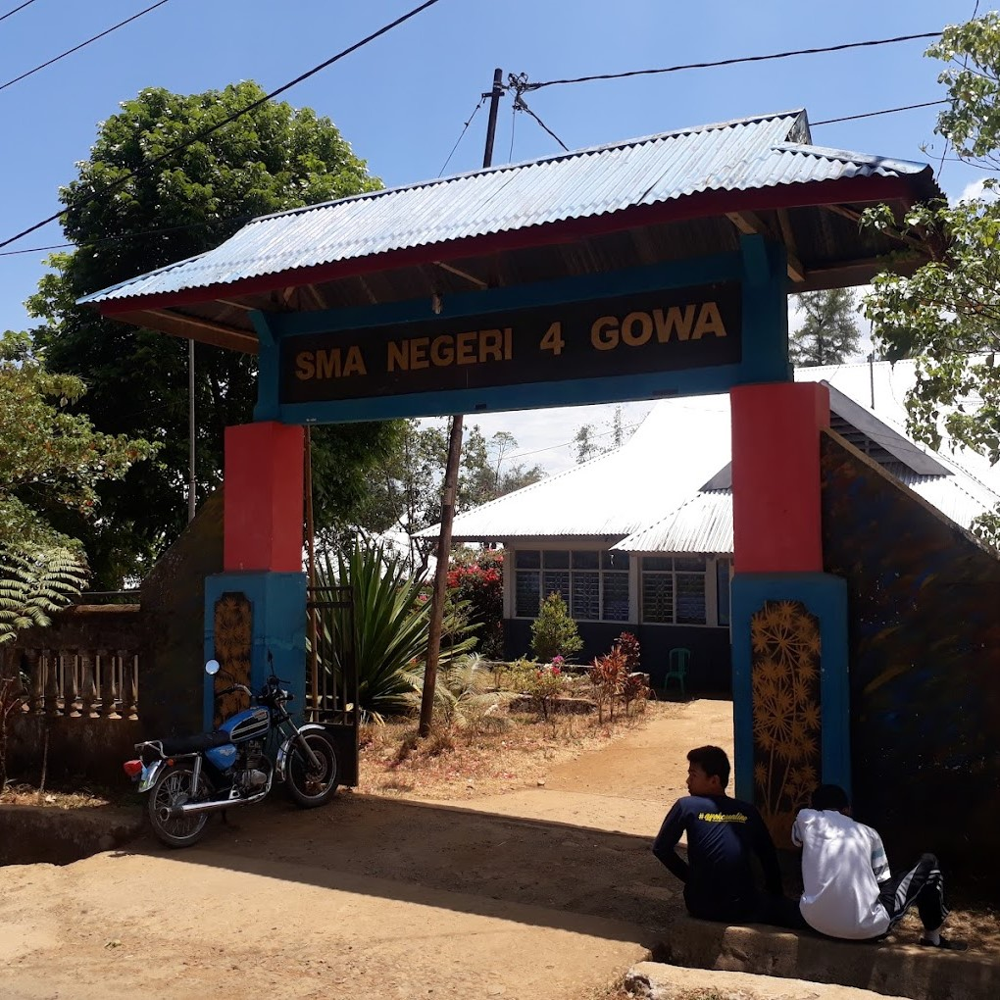
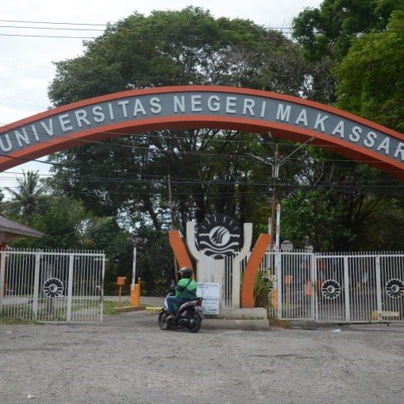

SMP Negeri 1 Tinggimoncong terletak di Jln. A. Makkatangka, Kel. Malino, Kec. Tinggimoncong, Kab. Gowa. Saya terdaftar sebagai murid di Sekolah Menengah Pertama(SMP) ini pada tahun 2016 tepatnya disaat saya berusia 14 tahun.

SMA Negeri 4 Gowa terletak di Jln. Pendidikan, Kel. Malino, Kec. Tinggimoncong, Kab. Gowa. Saya terdaftar sebagai murid di Sekolah Menengah Atas(SMA) ini pada tahun 2019 tepatnya disaat saya berusia 17 tahun.



UNIVERSITAS NEGERI MAKASSAR merupakan Universitas tempat dimana saya berkulih, tepatnya di Universitas Negeri
Makassar Parangtambung, Fakultas Teknik, Jurusan Teknik Informatika dan Komputer. Kampus Parangtambung
terletak di Jln. Malengkeri Raya Parangtambung Kec. Tamalate, Kota Makassar. Saya terdaftar sebagai mahasiswa di
kampus ini pada tahun 2022 tepatnya disaat saya berusia 19 tahun.
PENGALAMAN
Perkenalkan nama saya M.Gilang Ramadhan, kelas PTIK C dan saya adalah angkatan 2022, yang artinya baru
pertama kali turut meramaikan kegiatan tahunan JTIK yaitu ICE SPORT tahun 2023. Disini saya mengikuti
3 lomba, yaitu Futsal, Voli dan Tarik Tambang. Tapi pada kesempatan kali ini saya akan menceritakan
pengalaman saya mengikuti lomba voli di ICE SPORT. Awalnya saya ragu untuk mendaftarkan diri saya di voli,
dikarenakan saya tidak terlalu menguasai teknik teknik bermain voli. Tetapi karena keberanian dan
kepercayaan diri, akhirnya saya siap untuk mendaftarkan diri di perlombaan voli tersebut.
Singkat cerita, tibalah hari pertandingan pertama dimana kelas kami melawan PTIK G 21. Berhubung
dipertandingan pertama tersebut, lawan kita tidak sempat datang, maka kelas kita dinyatakan menang W.O.
(walkover) dan masuk ke 16 besar. Di pertandingan 16 besar kami melawan kelas PTIK F 20, dan tanpa latihan
sekalipun kami bisa mengalahkan kelas PTIK F 20 tersebut. Lanjut di babak 8 besar kami melawan besti kita
yaitu TEKOM D 22, dan dengan kepercaayan diri yang tinggi kami mengalahkan kelas TEKOM D 22 dan berhasil
melaju ke babak semifinal. Dibabak semifinal kita melawan sang juara di pertandingan voli ini, yaitu kelas
PTIK C 20. Namun, kami harus menerima kenyataan dan mengakui keunggulan dari tim lawan. Dengan begitu,
kami hanya akan memperebutkan juara 3. Dipertandingan perebutan juara 3, kami melawan kelas PTIK E 20.
Dengan doa, usaha dan kepercayaan diri saya dan teman teman, kami mengalahkan kelas PTIK E 20 dan berhasil
menjadi juara 3 di pertandingan voli tersebut. Sungguh pengalaman yang sangat memuaskan. TERIMAKASIH.
TENTANG KULIAH
Jadwal Mata Kuliah PTIK C 2022
| Hari | Mata Kuliah | Waktu | Dosen |
|---|---|---|---|
| Senin | Jaringan Komputer | 10.05 - 12.40 | Dr. Eng. Ir. Jumadi M Parenreng, M.Kom., IPM. Aulyah Zakilah Ifani, M.kom. |
| Selasa | Kecerdasan Buatan | 07.30 - 10.05 | Dr. Iwan Suhardi, ST., MT. Dyah Darma Andayani, S.T., M.Tel.Eng |
| Profesi Kependidikan | 13.10 - 14.50 | Prof. Dr. Ir. Riana Tangkin Mangesa, MT. Dwi rezky Anandari Sulaiman, S.Psi., M.Si. |
|
| Rabu | Struktur Data | 07.30 - 10.05 | Dyah Vitalocca, S.T., M.Pd. Muh. Akbar, S.Pd., M.Pd. |
| Keamanan Komputer | 14.50 - 17.50 | Dr. Eng. Ir. Abdul Wahid, ST., M.Kom., IPM. Fadhilrrahman Baso, S.Pd., M.Pd. |
|
| Kamis | Strategi Pembelajaran | 10.05 - 12.40 | Dr. M. Rais., S.Pd., M.P., M.T. Dr. Ir. Yasdin, S.Pd., M.Pd., M.Sc. IPM. |
| Pemrograman Web | 13.10 - 15.40 | Alifya Nfh, S.Pd., M.Pd. Muhammad Fadhil Supriadi, S.Pd., M.Pd. |
|
| Jumat | Inovasi Teknologi | 12.10 - 14.50 | Dr. Ir. Yasdin, S.Pd., M.Pd., M.Sc. IPM. M. Miftach Fakhri, S.Kom., M.Pd. |
Tabel Anggota Kelompok 3
| No | Nama | Jenis Kelamin | Alamat | Asal Sekolah | |
|---|---|---|---|---|---|
| Lengkap | Panggilan | ||||
| 1 | M.Gilang Ramadhan | Gilang | Laki-laki | Jln A.Mangerangi | SMAN 4 GOWA |
| 2 | Indra Alfit | Indra | Laki-laki | Bumi Paccerakkang Indah | MAN 3 MAKASSAR |
| 3 | Khairi Athallah Dafi | Dafi | Laki-laki | Jln Anuang | SMAN 16 MAKASSAR |
| 4 | La Ode Lisbar | Lisbar | Laki-laki | Jln Dg.Tata | SMAN 1 SAMPOLAWA |